Analytical Module Operating Principles
Purpose
- Incubator
- Wash Carousel
- Probe plate assembly and drive
Module Function
- Incubated at 37 °C
- Washed
- Read by the luminometer
- Presented to the incubator pick-and-place for removal after a luminometer read
For this document, the module is separated into two areas.
| Area | Actions | Components |
|---|---|---|
| Internal Components | Incubation and washing | Incubator wheel, wash carousel, heaters |
| External Components | Mixing control, substrate dispensing | Wash arm, mixer motor, substrate pump, and heater (part of fluidics module) |
Module Location
The analytical module is located on the right rear of the main level of the instrument, to the right of the reagent pipettors. The module is identifiable by the round shape and gray insulation, and is located under two pick-and-place modules and the substrate pump.
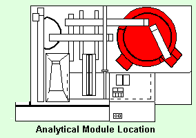
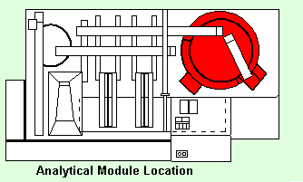
Operational Overview
This diagram shows the position numbers, descriptions, and relationships of the aspirate and dispense probes, luminometer read position, magnets, and wash-in and wash-out positions for the wash carousel. Refer to this drawing while reviewing the operational step details.
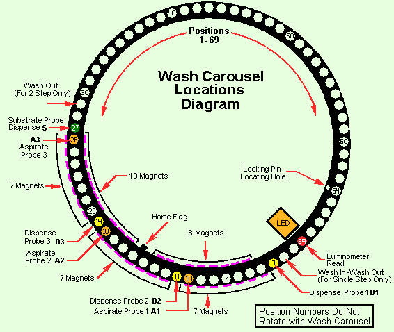
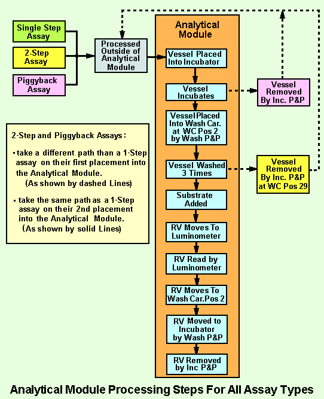
Analytical module operation is described in this section.
- An RV is placed into the incubator wheel by the incubator pick-and-place. The RV incubates here.
- After incubation, the RV is placed into the wash carousel by the wash pick-and-place (at wash-in position).
- The RV is moved clockwise one position (9-second pitch) by the wash carousel, to dispense probe 1 where wash buffer is added, bringing the total fluid volume in the RV to 500 µL.
- The RV is rotated clockwise seven positions (one position every nine seconds) by the wash carousel to aspirate probe 1.
Note: While moving from dispense probe 1 to aspirate probe 1, the sample passes through a magnetic field that removes the magnetic particles out of suspension.
- After sample, reagent, and buffer aspiration at aspirate probe 1, the aspirate probe is lifted so that the tip is in the probe wash module. A small volume of wash buffer is dispensed from the tip of the probe to wash the probe internally. Vacuum from a vacuum pump pulls the wash fluid and particles out of the probe.
- The RV is rotated clockwise one position by the wash carousel to dispense probe 2. The RV is lifted and spun while 500 µL of wash buffer is dispensed into the RV, and then the RV is lowered into the wash carousel.
- After resuspension, the RV is moved clockwise seven positions through a magnetic field to aspirate probe 2. This rotation requires seven pitches (63 seconds). At aspirate probe 2, the wash buffer is aspirated.
- The RV is rotated clockwise one position by the wash carousel to dispense probe 3 where a spin assembly lifts the RV. In this position, the RV is spun while 500 µL of wash buffer are dispensed into the RV, and then the RV is lowered into the wash carousel.
- After resuspension, the RV is moved clockwise seven positions through a magnetic field to aspirate probe 3. This rotation requires seven pitches (63 seconds). At aspirate probe 3, the wash buffer is aspirated.
- The vessel takes a specific route, depending on the type of assay. This table provides a list of assay types and shows the number of pipettings, incubations and washes for each.
Assay Type Pipettings Incubations Washes Single-Step 1 1 1 Two-Step 2 2 2 Piggyback 2 2 1 - The vessel remains in the wash carousel for movement to substrate dispense (for single-step assay).
- The vessel is moved to the incubation wheel (bypassing substrate dispense) by the incubator pick-and-place (for a two-step assay).
Note: Refer to flow diagram for one- and two-step assay processing.
- The RV is rotated clockwise one position by the wash carousel to the substrate probe. The RV is lifted and spun while 200 µL of substrate is dispensed into the RV, and then the RV is lowered into the wash carousel.
- The RV is advanced one position at a time (42 positions = 6 minutes and18 seconds) to the luminometer read position.
- At the luminometer read position, a spring positions the RV snugly toward the luminometer and the read is completed. The RV is moved to the wash pick-and-place wash-out position (for single-step assays). The RV is removed from the wash carousel by the incubator pick-and-place as time allows.
Note: DxI 600 serial numbers 900724 and above and DxI 800 serial numbers 603209 and above are no longer manufactured with a spring finger.
Luminometer and LED
- For calculating the DCF, the LED is powered on and warmed up for one second. The luminometer reads the LED three times, one reading every three seconds, and then the LED is powered off.
- The DCF is the target RLU divided by the measured RLU output of the LED.
- Result RLU = (raw RLU - median of the last 40 dark count readings) x DCF x 4.
- RLUs or dark count errors posted in the event log are result RLUs. The DCF and x 4 factor have been applied.
- The RLUs viewed in Luminometer Diagnostics are raw RLUs.
Component Identifications - Internal
This section provides information for the parts and assemblies internal to the analytical module.
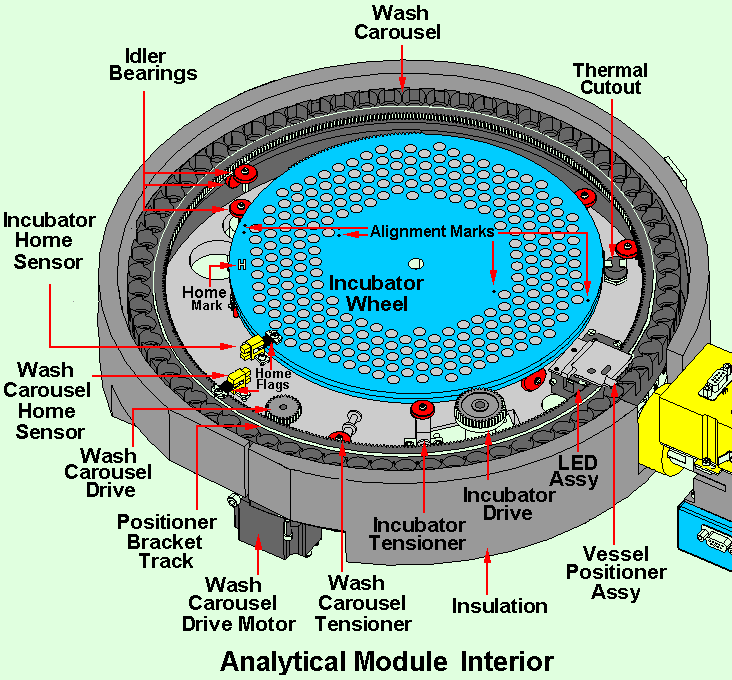
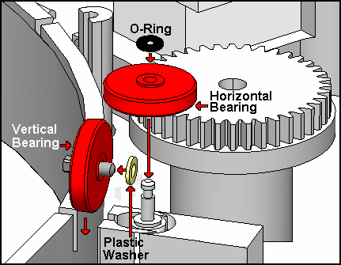
| Components | Description and Function |
|---|---|
| Bearings, Idler | Nonmagnetic Tercite wheels that support the incubator wheel and wash carousel. The wash carousel and incubator wheel are supported by eight idler bearings each, three vertical, and five horizontal. One horizontal bearing on each device is tensioned. (Quantity = 16 bearings.) |
| Carousel, Wash / Read | Provides locations for moving, washing, and reading RVs. Each position on the wash carousel is independent (isolated) from all other positions. No cross-talk occurs between samples because of the design. |
| Drive, Incubator | A plastic gear that is attached to the incubator drive motor shaft and rotates the incubator. |
| Drive, Wash Carousel | A plastic gear that is attached to the wash carousel drive motor shaft and rotates the Wash Carousel. |
| Incubator Wheel | A 10-inch round metal plate, temperature-controlled, with 258 locations for incubating RVs that contain samples. |
| Insulation | The foam insulation helps to keep temperatures inside the analytical module even or constant. |
| Insulation, Outer | Helps to maintain constant temperatures for the wash carousel and incubator wheel. |
| LED | Provides a constant source of light for the luminometer to determine if a luminometer fluctuation has occurred. Refer to the 'Luminometer' and 'LED' documents in this section. |
| Luminometer | "Views" and reacts to light emitted from a sample. The signal which is created is converted to RLUs. Refer to the 'Luminometer' and 'LED' documents in this section. |
| Motor, Incubator | An electrical precision motion device which rotates the incubator. |
| Motor, Wash Carousel | An electrical precision motion device which rotates the wash carousel. |
| Positioner, Spring
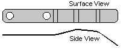 |
Provides the tension for holding vessels in a consistent position. It is attached to the Positioner, Vessel - Assembly.
Note: DxI 600 serial numbers 900724 and above and DxI 800 serial numbers 603209 and above are no longer manufactured with a spring finger. Vessel positioning was improved by removing the spring.
|
| Positioner, Vessel - Assembly | A metal bracket and spring (mounted with two screws) that holds vessels in position in front of the luminometer.
Note: DxI 600 serial numbers 900724 and above and DxI 800 serial numbers 603209 and above are no longer manufactured with a spring finger. Vessel positioning was improved by removing the spring.
|
| Sensor, Incubator | An electrical component that actuates when a flag on the incubator interrupts a transmitter or receiver light beam. |
| Sensor, Wash Carousel | An electrical component that actuates when a flag on the Wash Carousel interrupts a transmitter or receiver light beam. |
| Tensioner, Incubator | A component containing a spring that places constant tension on one of the three sets of incubator idler bearings. |
| Tensioner, Wash Carousel | A component containing a spring that places constant tension on one of the three sets of wash carousel idler bearings. |
Component Identifications - External
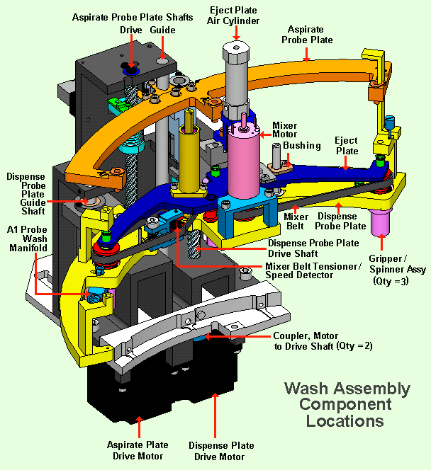
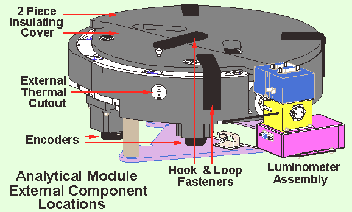
| Components | Description and Function |
|---|---|
| Coupler, Motor | Couples the vertical drive shafts to the drive motors (two). These couplers reduces noise and vibration and are slit in multiple locations. |
| Cover, Insulating | Contains two openings, one for vessels entering and exiting the incubator and one for vessels entering and exiting the wash carousel. The insulating top covers on the analytical module include two separate pieces of insulation attached to metal plates. The insulation is held to the metal with plastic snap fasteners. The cover is in two pieces to improve serviceability. The two-piece design allows the removal of the smaller portion of the cover to view mixing and other areas of the mix and wash area. The smaller cover is positioned on two locating pins. The covers are held to each other and to the module using hook and loop fasteners. |
| Cutout, Thermal | Opens the heater circuit when the temperature in module becomes excessive. |
| Cylinder, Eject Plate | Actuates the ejector plate causing it to move downward. This downward motion causes the RV eject rods to move downward and release the RVs. |
| Encoders | A sensing device that relays the steps moved by the incubator and wash carousel drive motors to ensure accurate movement of these devices. Encoders are reset to zero, when the device to which the encoder is attached is homed. Encoders are attached to the shafts of the drive motors and are visible on the underside of the analytical module. |
| Gripper / Spinner / Ejector | Like the pick-and-place grippers, this gripper picks up an RV in the wash carousel, spins the RV for mixing, and then holds the RV while it is lowered into the wash carousel. In the wash carousel, the center ejector forces the RV out of the gripper as the dispense plate is raised. |
| Manifold, Probe Wash | A small plastic housing containing a negative pressure to draw waste fluid and air from aspirate probe 1, when the aspirate probe is backflushed. |
| Manifold, Probe Wash | A small fluidic device that is used to internally backwash aspirate probe 1 and evacuate the fluid from this washing. |
| Motor, Aspirate Probe Plate Drive | Drives the aspirate probe plate vertically. |
| Motor, Dispense Probe Plate Drive | Drives the dispense probe plate vertically. |
| Motor, Mixer | Powers the mixer belt that rotates the gripper-spinner and ejector at these locations:
|
| Plate, Probe, Aspirate | The uppermost probe plate to which all three aspirate probes are mounted. The aspirate probe plate drive motor drives the probe plate vertically. |
| Plate, Probe, Dispense | The lowermost probe plate to which all three buffer dispense probes and the substrate probe are mounted. The dispense probe plate drive motor drives the probe plate vertically. |
| Plate, Eject | The plate located between the aspirate and dispense probe plates. Although two dispense probes and the substrate probe pass through this plate, the plate has no effect or control on the probes. The function of the plate is to eject RVs off the mix spinners after a mix cycle is completed. The eject plate air cylinder drives the eject plate. |
| Tensioner, Mixer | A spring-loaded pulley that keeps constant tension on the mixer belt as it rotates and is indexed to monitor the belt speed. |
| Valve, Duck-Bill | This one-way valve seals the area below aspirate probe 1 when the probe is raised. The duck-bill valve improves the amount of usable vacuum for removing the fluid forced downward through the aspirate probe. The valve also prevents fluid from dripping away from this area during the backwash process. This valve is slit and allows aspirate probe 1 to move downward into the RVs. This valve requires inspection and replacement because of the wear from the probe against the surface of the valve. |
Reaction Vessels In the Wash Carousel
The RV is supported at the bottom end and kept centered by the shape of the bottom of the hole. When the RV is lifted for mixing, the bottom of the RV is raised up but remains in the narrow area of the hole. Mixing rotation is smooth, which eliminates most contact between the RV and the wash carousel.
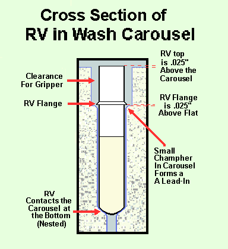
Probe Plate Gripper-Spinner Assembly
Mixing occurs when the gripper assemblies lift and spin the RVs at the dispense locations. The spin cycle alternately spins the RV in each direction, incorporating a pause between directional changes to reduce the stress on the belt.
The same mixer motor is used in the DxI as in the Access 2 instruments; however, the pulley attached to the mixer motor in the DxI is much larger.
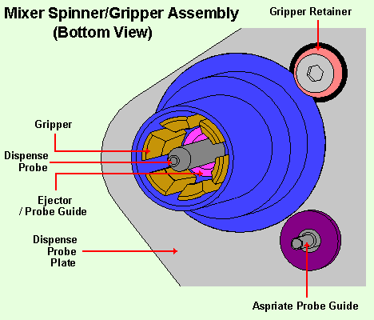
Lifting: Grippers in the dispense probe plate are lowered over the RVs as the dispense probe plate is lowered. RVs are lifted for spinning by the grippers when the dispense probe plate is raised.
Lowering and releasing: Once the mixing is completed, downward probe plate movement lowers the RV. When the RV is lowered completely, the ejector plate actuates, pressing the ejector and RV downward against the chamfered 'nest' in the carousel hole. The entire wash arm assembly (and all of the plates) is lifted. The ejector places downward force on the RV, until the RV is out of reach of the ejector. Using this method to release the RV, prevents splashing within the RV.
Wash Manifold
After aspirate probe 1 performs its aspirate function on an RV, the probe is backflushed internally. Raising the aspirate probe plate to a specific height, positions the bottom end of the probe inside the wash manifold. The backflush is performed by pumping clean wash buffer from the top of the probe through to the bottom of the probe. As buffer is pumped into the probe by the wash pump and valve, suction provided by one of the vacuum pumps draws the fluid away from the probe. The only function of the duck-bill valve is to increase the vacuum pressure by eliminating the large vacuum leak that would be present without it.
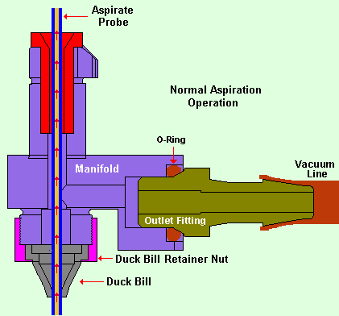
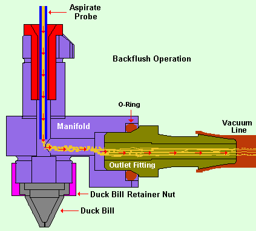
Mixer Belt Assembly
The mixer belt assembly consists of a belt routed around the mixer motor pulley and five other pulleys. A tensioner-speed detector assembly automatically tensions the belt and reads the mixing speed. The speed is measured at the tensioner, and the pulsed output of the sensor is converted to the speed of the dispense 2 pulley. The speed is displayed on-screen. Mixer speed is not adjustable. Software automatically controls the mixer speed. To increase or decrease the mixer speed, a DC control voltage is either increased or decreased.
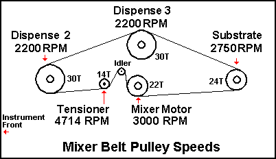
- The software triggers an error at ±770 rpm of the 4714 rpm at the tensioner pulley.
- The belt has 278 teeth.
Mixer Control - Initialization
- Mixer enable
- Mixer direction
- Mixer speed increment
- Mixer speed increment up or down
- In the Mixer Drive Circuit, the MCC7 is directed to send control signals to the analytical module interface PCB to apply voltage to the mixer motor.
Mixer Drive Circuit Path:
- MCC7 to MCC Backplane J70A.
- MCC Backplane J72 to Analytical Interface PCB J1.
- Analytical Interface J2 to the Mixer Motor.
- In the Tachometer Circuit, the Communications PCB (COMC) reads tachometer information from the speed sensor.
Tachometer Circuit Path:
- Tachometer to Analytical Interface connector J8.
- Analytical Interface J1 to MCC Backplane connector J72.
- MCC Backplane J2 to COMC connector J2.
- MCC7 sends a series of mixer speed increment signals, while the COMC PCB records tachometer readings after each increment.
- MCC7 reverses the mixer direction signal, and then the increment and read process is repeated for the opposite direction.
- MCC7 selects control settings for the Analytical Interface PCB to achieve 2200 rpm for each direction, derived from the successive readings.
Note: The control settings remain in effect until the next initialization.
- Any failure in the loop results in
Unable to initialize instrument and
Mixer Motor Failure events.
Note: While in Running mode, error events occur if the detected speed is not within 2200 ±770 rpm. For initialization to complete, the mixer belt speed must be 2200 ±112 rpm.
Encoders
The analytical module has two encoders, one for incubator rotation and one for wash carousel rotation. Encoders allow software to monitor the precise location of the motor shaft, ensuring exact and consistent positioning of RVs. For more information on encoder operation, refer to the Electronics OP: Encoders document.
Heaters
- The wash-read ring temperature sensor is located near the substrate spinner.
- The incubator temperature sensor is located on the bottom of the module near the center.
- Both thermistors connect to the temperature interface PCB located on the baseplate near the center of the instrument.
- Thermistor accuracy and function can be checked using TestAnalog to compare the wash wheel thermistor output Ch28 to the incubator thermistor output Ch27 (3.9 = 37 °C).
- The thermal cutouts remove power from the heaters when the temperature becomes excessive.
- Wash bracket heater (on module bottom)
- Magnet area side heater
- Substrate incubate side heater
- Incubator heater (on module bottom)
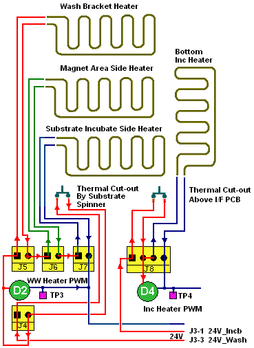
Interacting Devices
- Incubator pick-and-place
- Wash pick-and-place
- Fluidics module
- Substrate pump